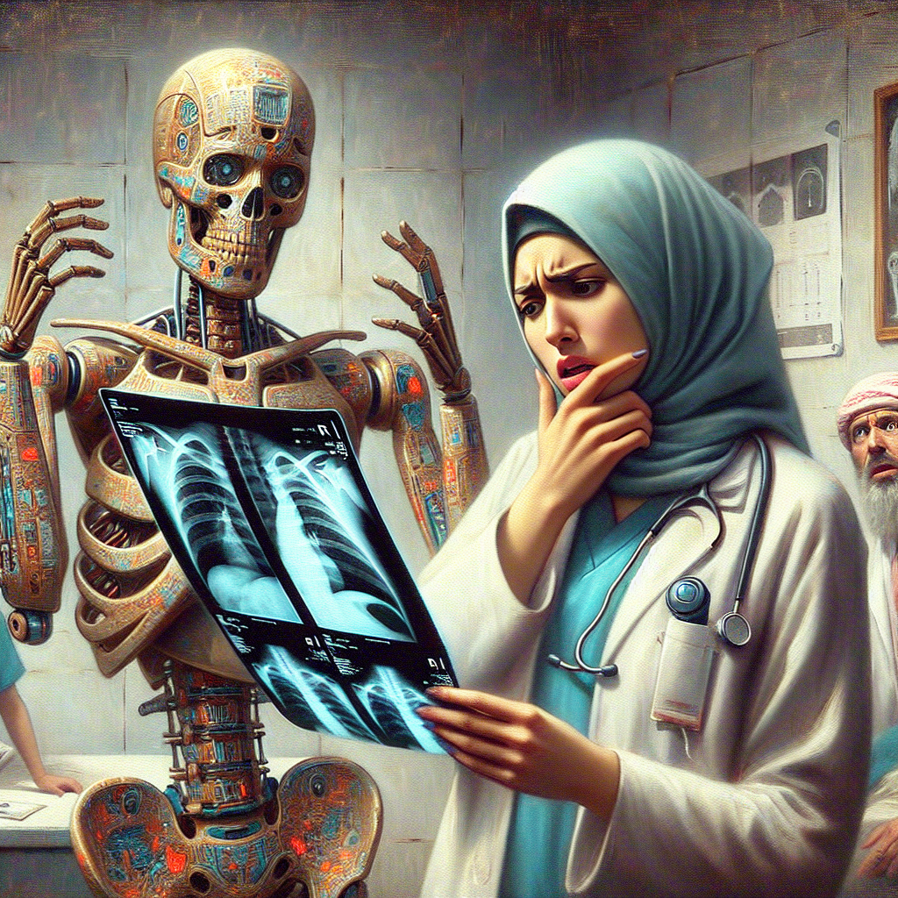

Why AI will never replace the radiologist
As we continue to witness remarkable advancements in artificial intelligence (AI) and machine learning, one area that often comes under scrutiny is radiology. Many proponents of AI argue that these technologies will eventually replace radiologists, but I strongly believe that this will never happen. In this blog post, I'll delve into the reasons why AI cannot substitute the human element in radiology and the potential drawbacks of relying solely on machine learning in this critical field.
First and foremost, the role of a radiologist extends far beyond just interpreting images. While AI can efficiently analyze X-rays, MRIs, and CT scans, it lacks the nuanced understanding that comes from years of medical training and hands-on experience. Radiologists are not only trained to identify abnormalities but also to correlate findings with clinical data, patient history, and symptoms. They possess the ability to make informed decisions based on a comprehensive understanding of the patient, something that AI cannot replicate.
Another significant concern is the issue of accountability and trust. In the medical field, the stakes are incredibly high, and a misdiagnosis can have severe consequences for patients. Radiologists are held to rigorous standards of practice and ethical considerations. If an AI system makes a mistake, who is responsible? The ambiguity surrounding accountability can lead to mistrust among patients and healthcare providers, which could hinder the acceptance of AI technologies in clinical settings.
Additionally, while machine learning algorithms can process vast amounts of data at lightning speed, they are not infallible. AI systems are only as good as the data they are trained on, and biases in training data can lead to skewed results. For instance, if an AI model is trained predominantly on a specific demographic, it may not perform well when presented with data from different populations. This limitation raises ethical concerns, particularly in a field where equitable healthcare delivery is paramount.
Moreover, the integration of AI into radiology can inadvertently dehumanize the patient experience. Radiologists often play a crucial role in patient communication, explaining diagnoses and treatment options in a compassionate manner. The personal touch that comes from a human provider cannot be replaced by a machine. Patients value the empathy and understanding that radiologists bring to their practice, which is essential for fostering trust and cooperation in the healthcare journey.
Finally, we must consider the evolving nature of medicine itself. Radiology is not static; it is a field that continually adapts to new technologies, techniques, and understandings of human health. Radiologists are not just interpreters of images; they are collaborators in a multidisciplinary team that includes physicians, surgeons, and other healthcare professionals. Their ability to integrate new findings and approaches into their practice is vital for advancing patient care.
In conclusion, while AI and machine learning are undoubtedly valuable tools that can enhance the capabilities of radiologists, they will never replace the indispensable human elements of empathy, accountability, and comprehensive clinical understanding. The future of radiology lies not in the displacement of radiologists, but in their collaboration with AI to improve diagnostic accuracy and patient outcomes. Embracing this partnership will ensure that we harness the strengths of both human and machine intelligence in the pursuit of better healthcare.